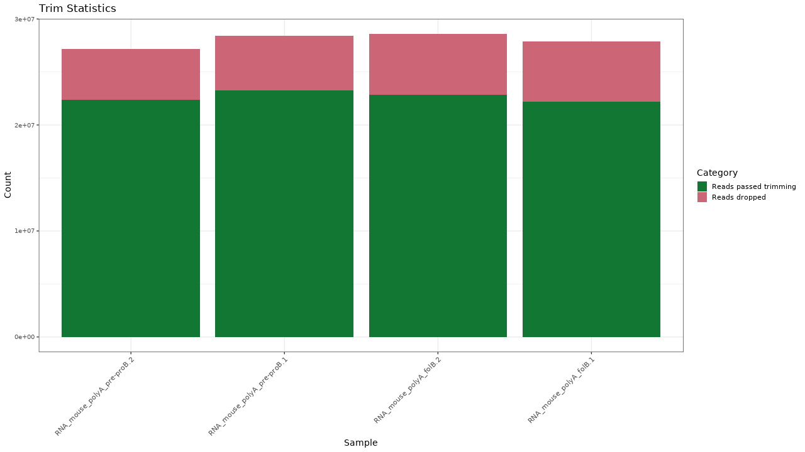
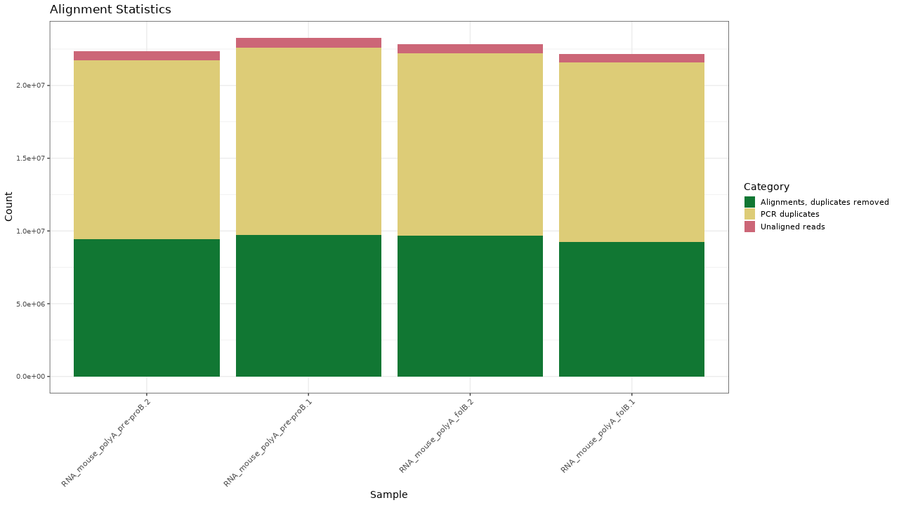
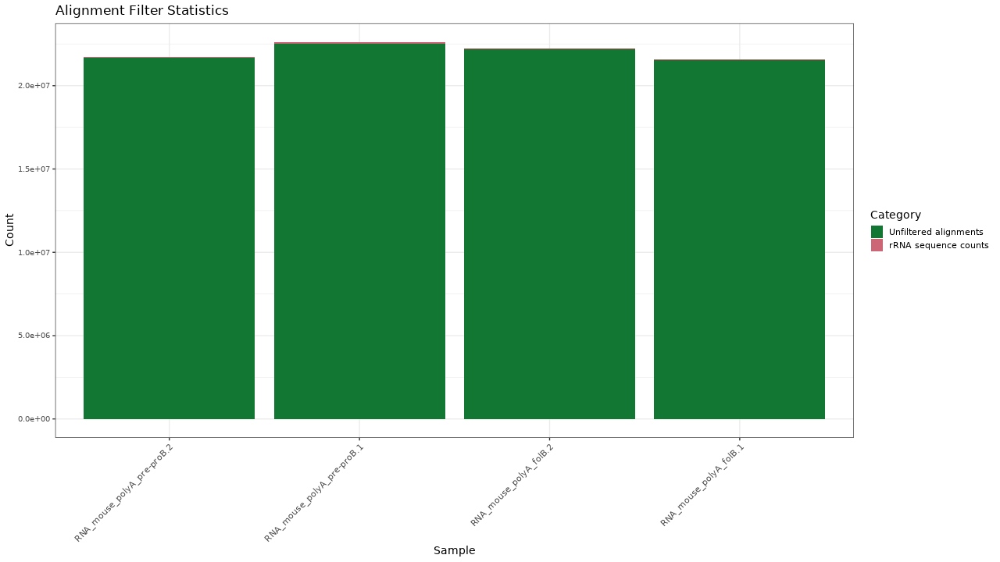
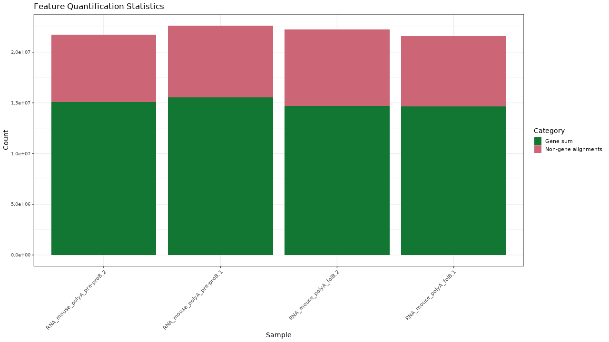
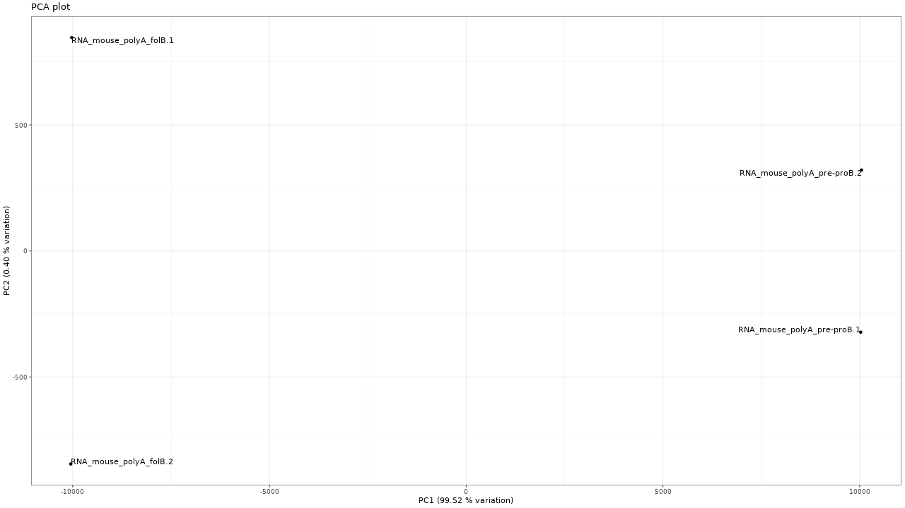

RNA-seq processing
Generated by: George Edward Chlipala
Report date: February 1, 2024
Overview
When you publish manuscripts based on data generated at our facility, we would greatly appreciate an acknowledgement of our efforts. Please cite our facility as follows (for example):
Basic processing of the raw data were performed by the University of Illinois at Chicago Research Informatics Core (UICRIC).
We adhere to a general policy for acknowledgements and authorship as established by the Association for Biomolecular Resource Facilities (ABRF) , and we support the following statement from the ABRF.
The existence of core facilities depends in part on proper acknowledgment in publications. This is an important metric of the value of most core facilities. Proper acknowledgment of core facilities enables them to obtain financial and other support so that they may continue to provide their essential services in the best ways possible. It also helps core personnel to advance in their careers, adding to the overall health of the core facility.
Please contact us for assistance in drafting manuscripts.
Output Files
| File | Description | Type |
|---|---|---|
| genes.txt | Raw counts per gene | result |
| exons.zip | Raw counts per exon | result |
| exons_annotation.zip | Exon-to-gene annotation | result |
| junctions.zip | Raw counts per splice junction | result |
| junctions_annotation.zip | Junctions-to-gene annotation | result |
| isoforms.zip | Raw counts per isoform | result |
| isoforms_annotation.zip | Isoform-to-gene annotation | result |
| gene_annotation_summary.txt | Summary of read annotations | result |
| genes_norm.txt | Normalized gene expression levels (CPM units) | result |
| Sample | OriginalID |
|---|---|
| RNA_mouse_polyA_folB.1 | RNA_mouse_polyA_folB.1 |
| RNA_mouse_polyA_folB.2 | RNA_mouse_polyA_folB.2 |
| RNA_mouse_polyA_pre-proB.1 | RNA_mouse_polyA_pre-proB.1 |
| RNA_mouse_polyA_pre-proB.2 | RNA_mouse_polyA_pre-proB.2 |
Details
- Method: FastQC
-
General quality-control metrics for next-generation sequencing data were obtained using FastQC.
Details
- Method: cutadapt
-
Custom ParametersSequencing trimming using cutadapt - -a = file:/mnt/store3/clustcrilab/reference/adapters/TruSeq_R1.fa
- -q = 20,20
- -m = 40
- --nextseq-trim = 20
- --report = minimal
- Method: Quality trimming
-
Custom ParametersQuality trimming based on quality threshold and length parameters. - min length = 40
- p = 20,20
- Method: Adapter trimming
-
Custom ParametersAdapter/primer sequences were trimmed from the reads. - 5' adapter = AGATCGGAAGAGCACACGTCTGAACTCCAGTCA
- 
Figure 1. Trimming results
Table 1. Trimming statistics Download table data
| Sample | Raw reads | Reads passed trimming | Reads dropped | Percent passing |
|---|---|---|---|---|
| RNA_mouse_polyA_folB.1 | 27890026 | 22182967 | 5707059 | 79.54 % |
| RNA_mouse_polyA_folB.2 | 28589327 | 22844856 | 5744471 | 79.91 % |
| RNA_mouse_polyA_pre-proB.1 | 28408668 | 23268450 | 5140218 | 81.91 % |
| RNA_mouse_polyA_pre-proB.2 | 27189999 | 22352203 | 4837796 | 82.21 % |
Details
- Method: STAR
-
Reads were aligned to the reference genome in a splice-aware manner using STAR. - Method: PCR Duplicate Removal with Picard
-
Apparent PCR duplicates were checked or removed with Picard (note: for RNA-seq samples, the full set of alignments are used for gene expression quantification).
- 
Figure 1. Alignment results
Table 1. Alignment statistics Download table data
| Sample | Alignments, duplicates removed | Alignments | PCR duplicates | Unaligned reads | Percent aligned | Percent non-duplicates |
|---|---|---|---|---|---|---|
| RNA_mouse_polyA_folB.1 | 9251608 | 21588988 | 12337380 | 593979 | 97.3 % | 41.7 % |
| RNA_mouse_polyA_folB.2 | 9663713 | 22224300 | 12560587 | 620556 | 97.3 % | 42.3 % |
| RNA_mouse_polyA_pre-proB.1 | 9709200 | 22608292 | 12899092 | 660158 | 97.2 % | 41.7 % |
| RNA_mouse_polyA_pre-proB.2 | 9442179 | 21741704 | 12299525 | 610499 | 97.3 % | 42.2 % |
Details
- Method: BWA MEM
-
Reads were aligned to the reference genome using BWA MEM. - Reference sequence database : Mouse rRNA
-
Mouse ribosomal RNA sequences from NCBI and Ensembl
- 
Figure 1. Filtering results
Table 1. Filtering statistics Download table data
| Sample | Alignments | rRNA sequence counts | Unfiltered alignments | Percent passing |
|---|---|---|---|---|
| RNA_mouse_polyA_folB.1 | 21588988 | 47404 | 21541584 | 99.8 % |
| RNA_mouse_polyA_folB.2 | 22224300 | 37122 | 22187178 | 99.8 % |
| RNA_mouse_polyA_pre-proB.1 | 22608292 | 109373 | 22498919 | 99.5 % |
| RNA_mouse_polyA_pre-proB.2 | 21741704 | 72023 | 21669681 | 99.7 % |
Details
- Method: FeatureCounts
-
Custom ParametersAbundance of genomic features (e.g., genes) were quantified as raw counts based on read alignments using featureCounts. - reference = mm10_mRNA.gtf
- parameters = -t exon -g gene_id --countReadPairs -s 2
- Method: FeatureCounts
-
Custom ParametersAbundance of genomic features (e.g., genes) were quantified as raw counts based on read alignments using featureCounts. - reference = reference_flattened.saf
- parameters = --countReadPairs -F SAF -O --fraction -f -s 2
- Gene annotation database : mm10 Ensembl
-
Ensembl annotations for mouse genome v.mm10
- 
- 
Figure 1. Quantification results
Figure 2. PCA plot
Table 1. Data processing summary statistics Download table data
| Stats | Raw reads | Trimmed reads | Percent | Alignments | Percent | Alignments, duplicates removed | Percent | rRNA sequence counts | Percent | Unassigned_MultiMapping | Percent | Unassigned_NoFeatures | Percent | Unassigned_Ambiguity | Percent | Gene sum | Percent | Genes expressed (out of 39056) | Entropy (base 2) | Isoform sum | Percent | Isoforms expressed (out of 112588) | Entropy (base 2) | Read length | Directions | Orientation |
|---|---|---|---|---|---|---|---|---|---|---|---|---|---|---|---|---|---|---|---|---|---|---|---|---|---|---|
| RNA_mouse_polyA_folB.1 | 27890026 | 22182967 | 0.795373 | 21588988 | 0.774076 | 9251608 | 0.331717 | 47404 | 0.00169968 | 10228652 | 0.366749 | 3747931 | 0.134382 | 157395 | 0.00564342 | 14635393 | 0.524754 | 17703 | 11.972 | 16625215 | 0.596099 | 54956 | 12.844 | 49 | SE | Reverse stranded |
| RNA_mouse_polyA_folB.2 | 28589327 | 22844856 | 0.799069 | 22224300 | 0.777364 | 9663713 | 0.338018 | 37122 | 0.00129846 | 10084610 | 0.35274 | 4352410 | 0.152239 | 150550 | 0.00526595 | 14711502 | 0.51458 | 17760 | 11.967 | 16646967 | 0.582279 | 54583 | 12.846 | 49 | SE | Reverse stranded |
| RNA_mouse_polyA_pre-proB.1 | 28408668 | 23268450 | 0.819062 | 22608292 | 0.795824 | 9709200 | 0.341769 | 109373 | 0.00384999 | 10655117 | 0.375066 | 3706145 | 0.130458 | 155124 | 0.00546045 | 15540809 | 0.547045 | 19120 | 12.213 | 17785508 | 0.626059 | 57891 | 13.010 | 49 | SE | Reverse stranded |
| RNA_mouse_polyA_pre-proB.2 | 27189999 | 22352203 | 0.822074 | 21741704 | 0.799621 | 9442179 | 0.347267 | 72023 | 0.00264888 | 10126663 | 0.372441 | 3451892 | 0.126954 | 153044 | 0.00562869 | 15083443 | 0.554742 | 19060 | 12.219 | 17189354 | 0.632194 | 57939 | 13.022 | 49 | SE | Reverse stranded |
Details
- Method: Kallisto
-
Gene isoforms were quantified with Kallisto, using k-mer-based pseudo-alignment and expectation maximization to probabilistically assign reads to isoforms. - Reference sequence database : mm10 transcriptome
-
Mouse mRNA and long-non-coding transcriptome from Ensembl, genome mm10.